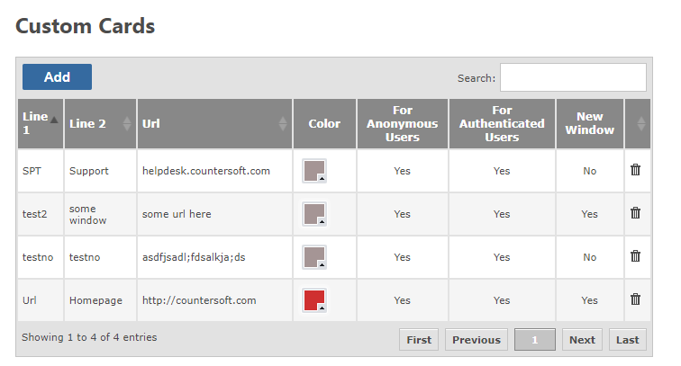
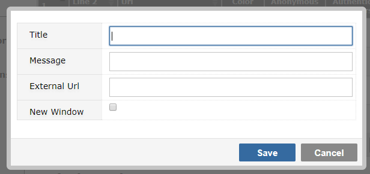
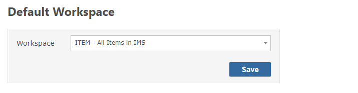
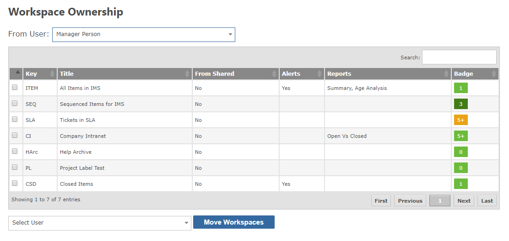

Custom cards allow you to create Workspace style cards which link to additional resources, such as coporate homepage, or other systems.

To create a custom card, click Add, and complete the form.

Click save to finish
To edit the records, click on the property and inline editing will be activated. Make the change and press enter to commit the change.
The default workspace denotes the view that a new user will see - one that has not created any workspaces themselves. It is far better than a shared workspace, because shared workspaces will keep track of changes and be resource intensive when every ticket is new to a new user.

Select the workspace from the list and click save.
When a new user visits the Gemini site, they will have this workspaces filter and column definition applied. It will run under their context, so if "assigned to me" was enabled, each new user would only see their own assigned issues.
This section shows all the workspaces from the select user. All users, including disabled users, are shown here. Selecting a user will show their workspaces in the table below.

If a user has left the organization, or is no longer active in Gemini, their workspaces, especially shared ones, could cause unecessary notifications, or take space on the workspace bundle. It is possible to take ownership of their workspaces, and then disable alerts, reports or revoke sharing.
First select the workspace to take ownerhsip, then select the user who will take ownership and click the Move Workspace button. The workspace will be moved to that new owner and if that is the current user, the workspace will appear on the left hand side as normal. From there, it can be edited as normal.